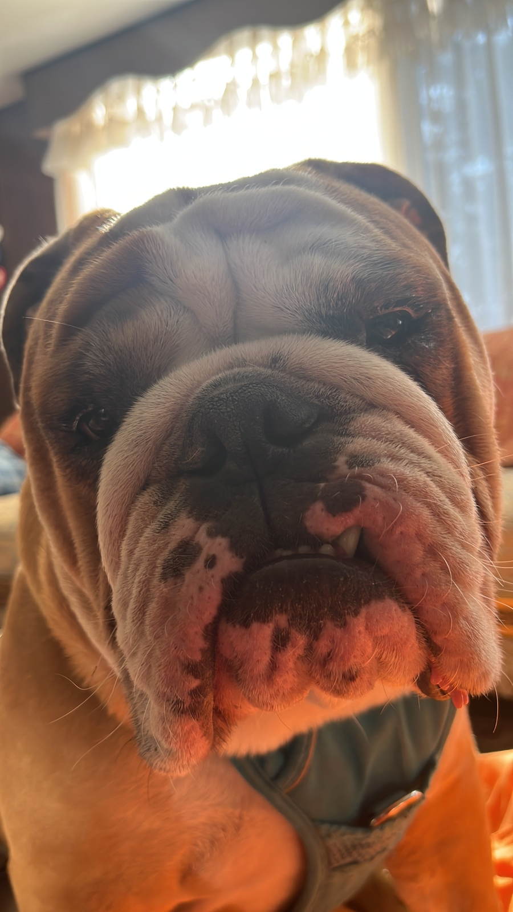

En febrero del 2021, mi papá me regaló a Pambazo, mi bulldog inglés. El me ha enseñado el significado de lo que es un canhijo. Tiene mamitis y le dan miedo la escoba y el trapeador. A los 6 meses se convirtió en un machito territorial y todavía no podemos controlar esa parte de él, pero cuando te ve con esos ojitos hinchados de recién despertado, no puedes negarte a darle un premio. Adora que le pongamos su arnés y su juguete favorito es un frisbee. Es un gordito muy consentido y aunque los bulldogs son delicados, no cambiaría nada en él. Bueno, tal vez que dejara de ser tan territorial y enemigo de otros perros. Pero nada más.
